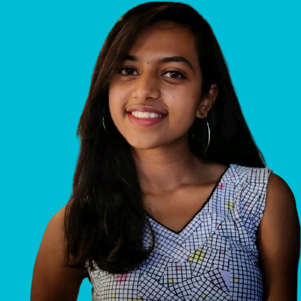
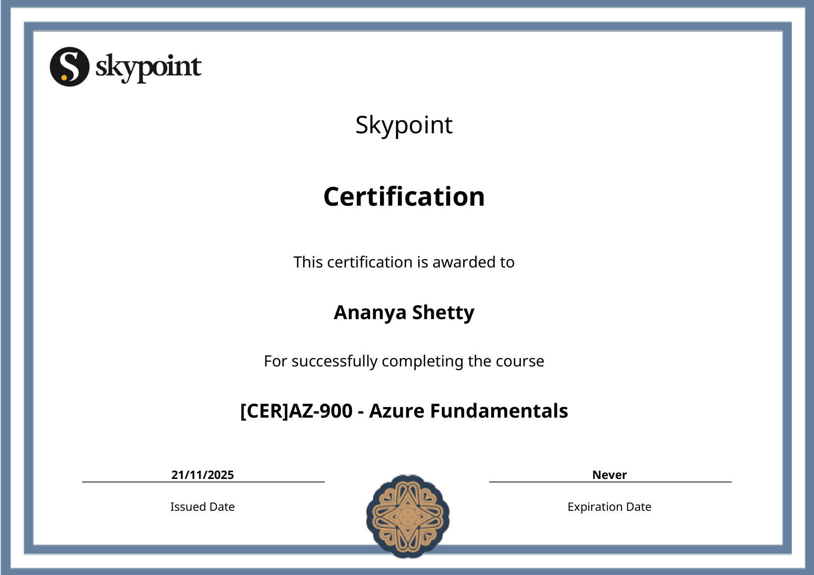
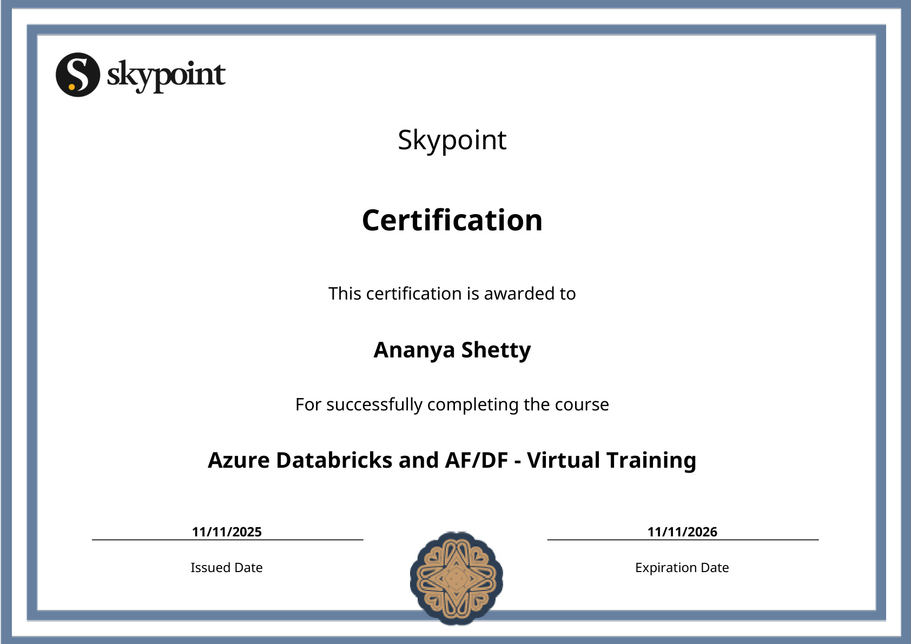
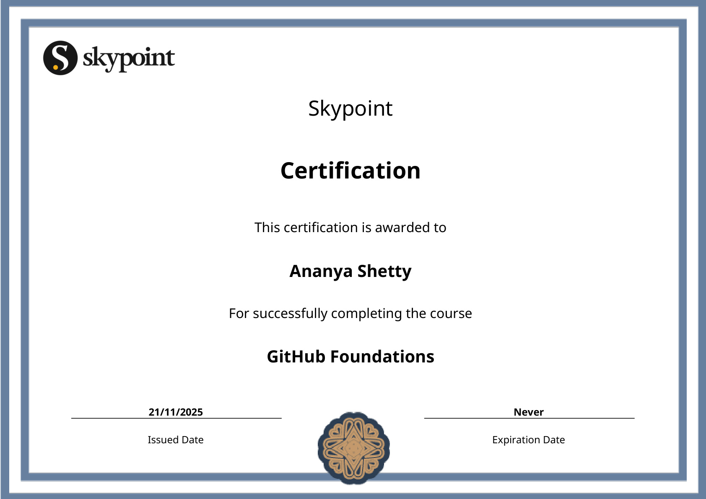
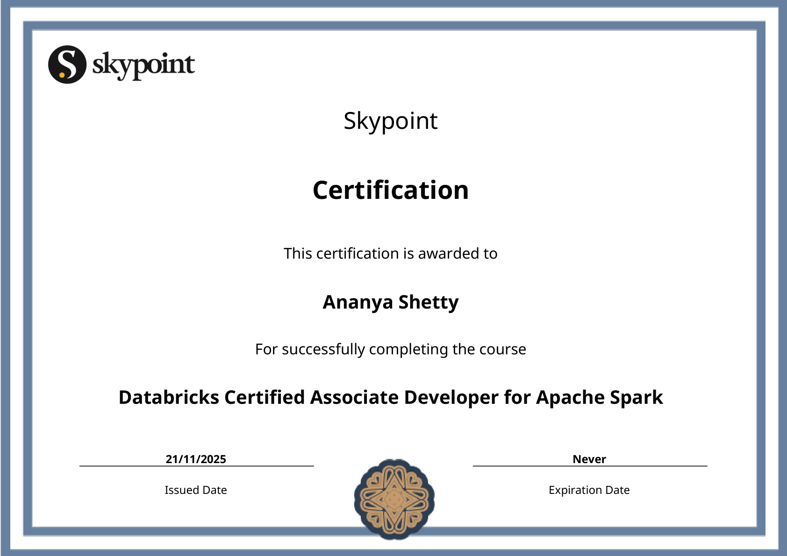
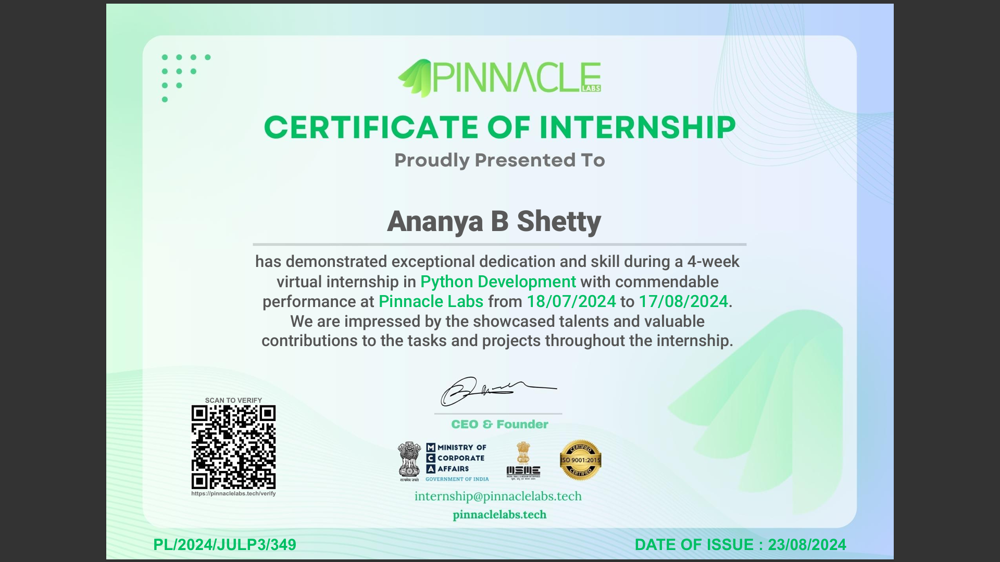
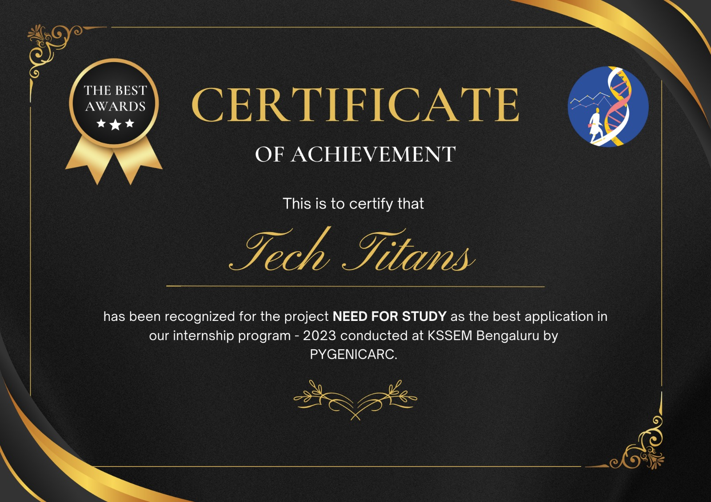

Download my complete professional resume in PDF format. My resume includes my education, technical skills, professional experience, certifications, and key achievements.
📥 Download Resume (PDF)Final-year Engineering student with strong hands-on experience in Core Java, Web Development (HTML, CSS, JavaScript), and Oracle SQL and Python Automation. Skilled in designing responsive web applications and managing cross-functional projects. Recognized for attention to detail, problem-solving skills, and the ability to collaborate in fast-paced environments. Eager to contribute technical and project management expertise to software and development teams.
Student Database Management System (Major Project) - A web-based system designed for efficient student record management with secure database integration. Features include role-based access, a clean UI, and integration with cloud storage for data security.
Tech Stack: Python Flask SQL Alchemy HTML CSS
Educational Website (Internship Project) - A structured website (frontend) offering categorized study materials and quizzes for students, enhancing online learning. Developed an educational website offering 10+ categorized study materials and interactive quizzes, improving user engagement for school students. Integrated interactive features such as downloadable PDFs and topic-based assessments.
Tech Stack: HTML CSS JavaScript Bootstrap
AI-Powered Symptom Checker (Hackathon Project) - An AI-driven chatbot that provides preliminary medical diagnosis based on user-input symptoms. Developed an AI-powered chatbot that processes symptoms provided by users and gives preliminary diagnosis suggestions. Utilized machine learning models trained on healthcare datasets to analyze symptoms and provide relevant health insights.
Tech Stack: Python NLP Flask Google Gemini CORS
| DOMAIN | SKILLS |
|---|---|
| Frontend Development | HTML, CSS, JavaScript, Bootstrap |
| Version Control and Collaboration | GitHub |
| Programming Languages | Python, C, Core Java |
| Database & Data Engineering | Oracle SQL, Azure Databricks, DBT, ETL Pipelines, Data Preprocessing, Data Validation, SQL Query Optimization, RLHF Dataset Workflows |
| Tools & Technologies | Python Automation, Excel (Advanced), Flask (Basic), Pandas, Jupyter Notebook |
| Embedded Systems | Arduino UNO, ESP-32, MATLAB |
| Areas of Interest | Data Analytics, Software Development (SDE), Web Development, Project Management, AI/LLM Data Operations |
| Soft Skills | Leadership, Communication, Project Management, Team Collaboration, Attention to Detail, Problem Solving, Adaptability, Self-Learning, Presentation, Time Management |
B.E. in Electronics and Communication Engineering
CGPA: 8.64
PCMB, SSMRV PU College
Percentage: 93.5%
ICSE, Aradhana Academy
Percentage: 87%
Fluent
Fluent
Native
Native
AI Data Curation and RLHF Intern
07/2025 - 11/2025
Engaged in data collection, curation, and labeling to support AI model training. Performed extensive Quality Checks (QC) and Data Validation on structured and semi-structured healthcare datasets. Developed DBT (Data Build Tool) models for healthcare benefits data including staging, cleaning, and transformations. Wrote and optimized SQL queries for profiling, cleaning, and validating sensitive healthcare data. Worked with Azure Databricks to preprocess large volumes of data using Python and SQL. Contributed to RLHF pipelines by curating datasets for AI/LLM model training with focus on label correctness and annotation consistency. Automated validation tasks using Python scripts, improving QC efficiency for the data engineering team.
Frontend Developer Intern
10/2023 - 11/2023
Gained hands-on experience in Frontend web development, using HTML, CSS, and JavaScript and developed an educational website that provides study materials for school students. Also got selected as the Student Intern for the company. Worked on enhancing the website’s UI/UX and integrating additional learning resources.
Campus Ambassador
07/2024 - 01/2025
As a Campus Ambassador for E-cell, IIT-Bombay, I actively promote entrepreneurship initiatives on my campus, connecting students with resources, workshops, and events that foster innovation and leadership skills.
07/2024 - 08/2024
During the course, completed key projects such as an alarm program with customizable tones and snooze options, a monthly calendar app that allows reminder management, and a quiz platform with customizable quizzes and scoring features.
08/2024 - Present
Assisted in quality checking and issue tracking for a website under development, coordinated with the development team to resolve bugs and UI/UX issues, and helped with social media strategies, content planning, and project timelines.
Skypoint AI
Key Responsibilities:
PygenicArc
Project Scope:
Outcome: Developed responsive, user-friendly frontend enhancing students' learning experiences. Selected as Student Intern for the company.
E-Cell, IIT Bombay
Key Achievements:
Impact: Strengthened leadership, event management, and networking skills while fostering an entrepreneurial culture on campus.
RitikaYourHealthCoach
Responsibilities:
Skills Developed: Project management and digital marketing expertise in health-focused organization.
Pinnacle Labs
Projects Completed:
Focus: Practical Python application development suitable for educational and entertainment use.
Government School, Gottigere, Bangalore
Responsibilities:
Impact: Enhanced overall educational experience and contributed to student development through practical, engaging teaching methods.





